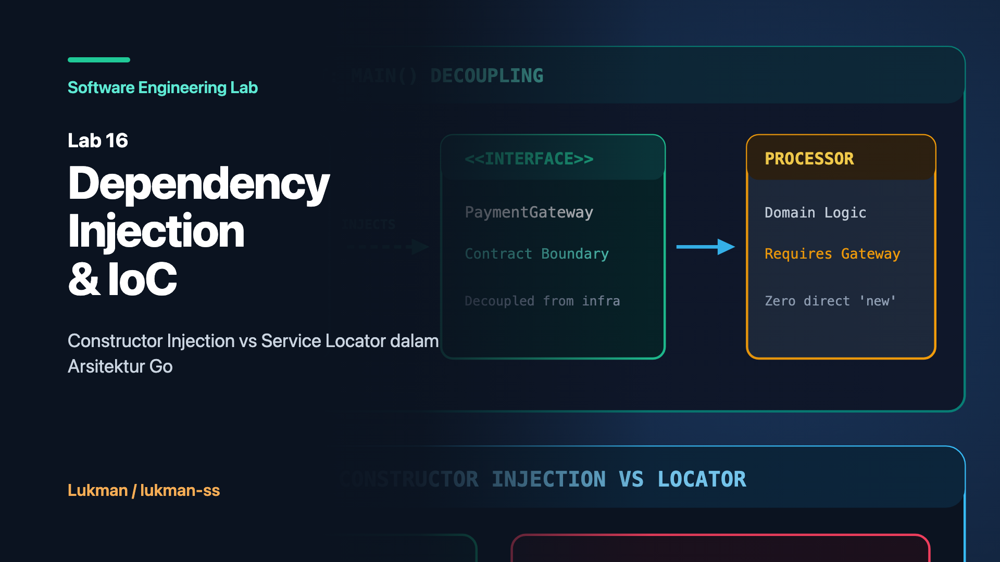

Dependency Injection & IoC: Constructor Injection vs Service Locator dalam Arsitektur Go
Constructor Injection vs Service Locator dalam Arsitektur Go

Ketika sebuah servis bisnis menginstansiasi dependensi infrastrukturnya sendiri secara langsung—misalnya Processor yang memanggil new RealGateway() di dalam metodenya—logika bisnis terkunci rapat dengan implementasi vendor eksternal. Setiap penulisan unit test terpaksa melibatkan koneksi jaringan sungguhan, kegagalan pihak ketiga melumpuhkan pipeline CI, dan pergantian penyedia layanan menuntut refactor besar-besaran di berbagai lapisan kode.
Prinsip Inversion of Control membalik arah kendali perakitan: modul logika bisnis tidak lagi membangun atau mencari dependensinya sendiri, melainkan menerimanya dari pemanggil eksternal melalui antarmuka kontrak yang eksplisit.
Hardcoded Dependency Merusak Uji Sistem
Instansiasi langsung RealGateway di dalam Processor mengunci dependensi konkret ke lapisan logika bisnis. Test tidak bisa mengisolasi kegagalan gateway dari bug domain, memaksa unit test berubah menjadi integration test yang lambat, rapuh, dan bergantung pada status server eksternal.
Dalam skenario production, keterikatan langsung ini membuat sistem mustahil diuji secara deterministik. Ketika gateway payment pihak ketiga mengalami gangguan atau pemeliharaan berkala, pipeline pengujian otomatis lokal dan CI seketika gagal meskipun tidak ada kesalahan logika pada kode aplikasi.
Service Locator Menyembunyikan Kebutuhan Komponen
Sebagai jalan pintas, banyak arsitektur mengadopsi Service Locator dengan mengoper sebuah container ke seluruh komponen sistem. Pendekatan ini tampak fleksibel di awal karena konstruktor hanya menerima satu objek kontainer serbaguna. Namun, signature NewBadProcessor(c Container) menutupi dependensi nyata yang sebenarnya dibutuhkan oleh proses pembayaran.
Compiler Go tidak dapat memvalidasi apakah service yang dibutuhkan benar-benar terdaftar di dalam container saat kompilasi. Ketiadaan dependensi baru meledak menjadi panic atau error di runtime ketika fungsi dieksekusi di lingkungan produksi, meniadakan manfaat perlindungan statis dari bahasa berpengetikan ketat.
IoC Bukan Fitur, Tapi Arah Kendali
Inversion of Control (IoC) bukanlah pustaka atau fitur bahasa, melainkan arah pembalikan kendali arsitektur. Mengikuti Hollywood Principle ("Don't call us, we'll call you"), komponen bisnis tidak lagi aktif menginisialisasi atau memburu koneksi infrastruktur. Modul bisnis hanya menyatakan kontrak antarmuka yang dibutuhkannya untuk beroperasi.
Pemisahan ini membagi siklus hidup aplikasi menjadi dua ranah tegas: fase konfigurasi di mana graf ketergantungan dirakit oleh composition root, dan fase eksekusi di mana logika domain memproses aliran transaksi tanpa mengetahui detail implementasi fisik penyedia layanan.
Alur Request Melalui Boundary Abstraksi
Alur eksekusi request pembayaran mengalir melalui batas kontrak yang tegas. Klien luar memanggil ProcessPayment(amount) pada domain processor. Processor terlebih dahulu menjalankan validasi internal sebelum mendelegasikan panggilan ke antarmuka PaymentGateway.
Karena processor hanya bergantung pada antarmuka kontrak, pemanggil bebas menukar implementasi gateway nyata dengan mock test ganda tanpa mengubah satu baris pun logika bisnis pemrosesan pembayaran.
type PaymentGateway interface {
Charge(m Money) error
}Constructor Membuat Dependency Terlihat
Penerapan Constructor Injection memindahkan tanggung jawab pemilihan implementasi ke caller melalui signature fungsi pembangun NewProcessor(g PaymentGateway). Kontrak ketergantungan terpampang transparan dan divalidasi langsung oleh compiler.
type Processor struct {
gateway PaymentGateway
}
func NewProcessor(g PaymentGateway) *Processor {
return &Processor{gateway: g}
}Dengan konstruktor eksplisit, komponen dijamin memiliki seluruh instrumen yang dibutuhkannya sejak instansiasi pertama. Ketiadaan parameter wajib akan langsung menolak proses kompilasi kode.
Jalur Kegagalan: Nil Interface Panics
Meskipun Constructor Injection memberikan transparansi tipe secara compile-time, sistem tetap memiliki celah runtime di Go. Tipe antarmuka Go dapat menampung nilai nil. Jika pemanggil secara tidak sengaja mengoper NewProcessor(nil), proses kompilasi tetap lolos tanpa peringatan.
Kegagalan fatal baru meletus menjadi runtime panic nil pointer dereference saat method p.gateway.Charge(m) dipanggil di tengah proses transaksi. Oleh karena itu, konstruktor di lingkungan produksi wajib menyertakan guard pengecekan eksplisit if g == nil.
Biaya Tersembunyi: Wiring Boilerplate
Penerapan manual dependency injection menuntut perakitan objek secara eksplisit di cmd/demo/main.go. Pada aplikasi monolitik besar dengan ratusan komponen, fungsi perakitan ini dapat membengkak menjadi puluhan baris konfigurasi.
| Aspek Arsitektur | Manual Wiring (Lab Ini) | DI Framework (Wire / Dig) |
|---|---|---|
| Keterbacaan Graf | Eksplisit terbaca di composition root | Tersembunyi di balik reflection / generator |
| Overhead Eksekusi | Zero runtime overhead, kompilasi cepat | Refleksi runtime lambat atau langkah build tambahan |
| Keamanan Refactor | Compiler menangkap perubahan parameter seketika | Bergantung pada analisis pustaka pihak ketiga |
Manual wiring menukar kenyamanan otomasi dengan transparansi mutlak dan kecepatan pelacakan aliran program.
Setup Uji: Isolasi Dua Jalur Arsitektur
Suite eksperimen di dalam tests/processor_test.go merancang enam skenario pengujian simetris untuk membandingkan karakteristik Processor berbasis Constructor Injection dengan BadProcessor berbasis Service Locator.
Kedua varian diuji menggunakan implementasi tiruan MockGateway yang sepenuhnya berjalan in-memory, tanpa membuka soket jaringan atau memerlukan setup database eksternal. Seluruh suite dieksekusi dengan deteksi konkurensi go test -race ./....
Output Demo: Verifikasi Eksekusi Terpisah
Eksekusi demonstrasi di terminal memverifikasi bahwa kedua pola arsitektur mampu memproses pembayaran secara fungsional menggunakan implementasi RealGateway yang sama.
$ go run ./cmd/demo
--- Running Constructor Injection ---
RealGateway charging 100 USD
--- Running Service Locator ---
RealGateway charging 200 USDHasil eksekusi membuktikan bahwa perbedaan utama kedua pendekatan bukan terletak pada kapabilitas runtime atau keluaran fungsional, melainkan pada kemudahan pemeliharaan, kejelasan kontrak, dan kecepatan pengujian terisolasi.
Test Memvalidasi Alur, Bukan Kesiapan Skala
Keberhasilan suite pengujian unit membuktikan bahwa logika bisnis terisolasi sempurna dari dependensi eksternal. Namun, hasil ini memiliki batasan pembuktian yang tegas dan tidak boleh disamakan dengan kesiapan sistem menghadapi beban produksi nyata.
- Yang dibuktikan test: Logika pemrosesan mendelegasikan nilai uang secara akurat ke mock gateway, dan validasi jumlah menolak nilai negatif sebelum menyentuh antarmuka.
- Yang tidak dibuktikan test: Ketahanan terhadap connection pool starvation, penanganan timeout jaringan HTTP riil, dan mekanisme retry transaksi saat gateway eksternal down.
Trade-off: Fleksibilitas vs Kejelasan Kontrak
Memilih antara Constructor Injection dan Service Locator selalu melibatkan pertukaran arsitektural. Service Locator menawarkan fleksibilitas penambahan dependensi tanpa mengubah signature fungsi publik, namun mengorbankan keamanan kompilasi dan transparansi kontrak.
Sebaliknya, Constructor Injection menjamin seluruh kebutuhan servis terlihat gamblang di signature pembangun. Konsekuensinya, penambahan dependensi baru memaksa pembaruan signature konstruktor di seluruh pemanggil terkait.
Value Object Tidak Memerlukan Injeksi
Salah satu kesalahan umum dalam penerapan DI adalah mengabstraksikan dan menyuntikkan seluruh struktur data ke dalam container. Struktur data murni tanpa logika efek samping jaringan, seperti Money, adalah Value Object yang wajib diinstansiasi secara langsung.
func (p *Processor) ProcessPayment(amount int) error {
if amount <= 0 {
return errors.New("invalid amount")
}
m := Money{Amount: amount, Currency: "USD"}
return p.gateway.Charge(m)
}Menyuntikkan factory atau container untuk objek data pasif seperti Money hanya menambah lapisan indirection yang membingungkan tanpa memberikan manfaat pengujian apa pun.
Sebelum vs Sesudah Constructor Injection
Transformasi dari pengikatan keras ke penyuntikan dependensi memberikan dampak dramatis pada evolvability sistem rekayasa perangkat lunak.
| Karakteristik | Hardcoded Gateway (Sebelum) | Constructor Injection (Sesudah) |
|---|---|---|
| Instansiasi Objek | Servis membuat gateway sendiri via new | Caller mengoper antarmuka via parameter |
| Kecepatan Pengujian | Lambat, flaky, bergantung jaringan luar | Instan (0.00s) menggunakan Mock in-memory |
| Substitusi Vendor | Harus memodifikasi file logika domain | Cukup mengganti perakitan di composition root |
Batasan Lab: Manual Wiring In-Memory
Eksperimen lab ini sengaja dibatasi pada implementasi manual wiring murni menggunakan pustaka standar bahasa Go. Lab ini tidak mencakup integrasi pustaka container otomatis seperti Google Wire, Uber Dig, atau Fx.
Lab ini juga tidak menguji manajemen daur hidup objek (Singleton, Scoped, Transient) atau validasi scope dependensi yang lazim ditemukan pada framework berskala enterprise. Tujuannya adalah mengisolasi esensi struktural pemisahan konfigurasi dari penggunaan tanpa distorsi fitur pihak ketiga.
Kasus Batas: Penanganan Parameter Tidak Valid
Pemisahan dependensi tidak meniadakan tanggung jawab validasi domain di trust boundary. Pengujian TestProcessor_InvalidAmount membuktikan bahwa input bernilai negatif ditolak seketika oleh logika bisnis.
func TestProcessor_InvalidAmount(t *testing.T) {
mock := &MockGateway{}
proc := di.NewProcessor(mock)
err := proc.ProcessPayment(-10)
if err == nil {
t.Fatalf("expected error for negative amount, got nil")
}
if mock.ChargedMoney.Amount != 0 {
t.Errorf("gateway should not have been called, but got %d", mock.ChargedMoney.Amount)
}
}Assertion menegaskan bahwa mock.ChargedMoney.Amount tetap bernilai 0, memastikan panggilan ke infrastruktur pembayaran eksternal sama sekali tidak terjadi ketika parameter input cacat.
Fakta yang Dibuktikan Suite Pengujian
Eksekusi test suite otomatis membuktikan enam fakta konkret:
1. Processor sukses mendelegasikan transaksi valid ke MockGateway.
2. Error yang dihasilkan gateway eksternal dipropagasikan utuh ke pemanggil.
3. Validasi jumlah memblokir transaksi negatif sebelum menyentuh gateway.
4. BadProcessor melakukan delegasi yang sama melalui perantara kontainer.
5. Seluruh suite pengujian selesai dalam waktu kurang dari 0.01 detik.
6. go test -race ./... mengonfirmasi ketiadaan data race pada skenario uji.
Batas Integritas: Apa yang Tidak Diuji
Hasil pengujian yang bersih tidak boleh dilebih-lebihkan menjadi klaim kesiapan produksi mutlak. Test suite ini tidak membuktikan performa throughput tinggi di bawah ribuan request konkuren simultan.
Pengujian juga tidak mengevaluasi potensi memory leak pada graf dependensi berdaur hidup panjang atau kestabilan sistem terdistribusi saat terjadi partisi jaringan. Kesiapan produksi menuntut pengujian integrasi beban dan chaos engineering tambahan.
Risiko: Constructor Over-Injection
Ketika sebuah kelas bisnis membutuhkan belasan parameter antarmuka di dalam konstruktornya, fenomena ini disebut Constructor Over-Injection. Masalah ini sering kali disalahpahami sebagai kelemahan pola DI, sehingga developer tergoda kembali menggunakan Service Locator.
Faktanya, constructor yang membengkak adalah sinyal peringatan keras dari compiler bahwa kelas tersebut memikul terlalu banyak tanggung jawab (melanggar Single Responsibility Principle). Solusi arsitektural yang benar adalah memecah god-object tersebut menjadi beberapa service yang lebih terfokus.
Panduan Implementasi DI yang Aman
- Interface at Consumption: Definisikan interface pada paket consumer yang menggunakannya, bukan di paket penyedia implementasi konkret.
- Constructor by Default: Terapkan Constructor Injection sebagai standar baku untuk seluruh service berstatus stateful atau membutuhkan infrastruktur.
- Nil Guard Protection: Tambahkan pemeriksaan nilai nil di dalam fungsi pembangun guna mencegah potensi panic pointer di runtime.
- Single Composition Root: Pusatkan seluruh inisialisasi dan pengikatan dependensi konkret di fungsi
main()atau composition root terdedikasi. - Direct Value Objects: Hindari penyuntikan struktur data murni tanpa efek samping ke dalam mekanisme DI.
Anti-Pattern: Passing Container ke Domain
Standar PSR-11 dan panduan rekayasa perangkat lunak modern menegaskan rekomendasi kuat bahwa aplikasi sebaiknya tidak mengoper objek container ke dalam kelas logika bisnis.
Menyuntikkan container ke dalam domain logic menciptakan ketergantungan parasit terhadap antarmuka framework, menyembunyikan kontrak dependensi yang sebenarnya, dan memaksa setiap unit test untuk mem-mock keseluruhan container alih-alih dependensi spesifik.
Reproduksi Mandiri di Mesin Lokal
Repositori lab dirancang tanpa dependensi eksternal pihak ketiga dan dapat diverifikasi langsung menggunakan Go toolchain standar:
cd labs/16-dependency-injection
go test -v ./... # menjalankan 6 skenario pengujian unit
go test -race ./... # memverifikasi ketiadaan race condition pada test
go run ./cmd/demo # mengeksekusi perbandingan DI vs Service LocatorDI Memperlihatkan Dependency Komponen
Nilai utama dari Dependency Injection bukan terletak pada keajaiban otomasi framework, melainkan pada transparansi kontrak arsitektural. Memisahkan fase perakitan dari fase eksekusi memastikan logika domain tetap murni, mudah dipahami, dapat diuji secara kilat, dan siap berevolusi seiring perkembangan kebutuhan sistem.
Sumber: Software Engineering Lab 16 - Dependency Injection, snapshot commit 76f0059. Diperiksa melalui berkas README, implementasi antarmuka, dan catatan eksekusi pengujian.